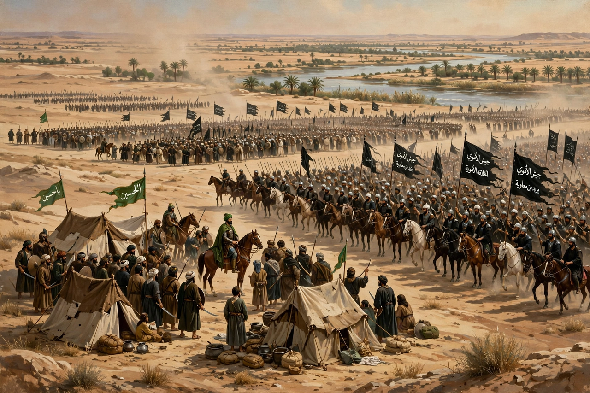

| Battle of Karbala | |
|---|---|
 | |
| Date | 10 October 680 CE (10 Muharram 61 AH) |
| Location | Karbala, present-day Iraq |
| Belligerents | Forces of Yazid I vs. party of Husayn ibn Ali |
| Result | Umayyad victory; Husayn killed |
The Battle of Karbala took place on 10 Muharram 61 AH (10 October 680 CE) between the army of the Umayyad caliph Yazid I and the small retinue of Husayn ibn Ali, grandson of Muhammad. Husayn and nearly all his male companions and relatives were killed, an event central to Shia Islam and commemorated on Ashura.
After Mu'awiya I, founder of the Umayyad Caliphate, died in 680, succession passed to his son Yazid, breaching in Shia and many other views the terms of Hasan ibn Ali's treaty. Husayn refused allegiance, travelled from Mecca toward Kufa after receiving letters of support, and was intercepted by troops under al-Hurr ibn Yazid and then besieged by an army commanded by Umar ibn Sa'd under orders from governor Ubayd Allah ibn Ziyad.
At Karbala, Husayn's party — traditionally about 72 fighting men — was denied access to the Euphrates. After negotiations failed and some of Husayn's opponents, including al-Hurr, defected to him, fighting on Ashura saw his companions killed one by one, including his half-brother Abbas and sons Ali al-Akbar and the infant Ali al-Asghar in traditional accounts. Husayn was killed last; his head was taken to Damascus. Women and children, including his sister Zaynab and son Ali Zayn al-Abidin, were taken captive.
Karbala deepened the Sunni–Shia divide originating in the succession to Muhammad after Abu Bakr and Ali. The Tawwabun (Penitents) and Mukhtar al-Thaqafi's revolt sought vengeance for Husayn. Shia mourning rituals of Muharram, pilgrimage to Husayn's shrine in Karbala, and the theology of martyrdom all centre on the battle, especially in Twelver Shi'ism.